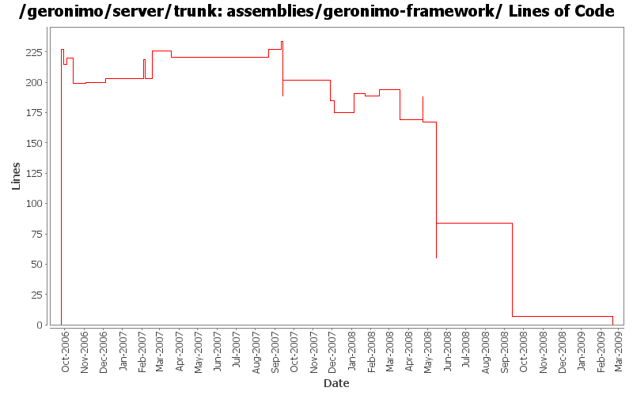

[root]/assemblies/geronimo-framework
 src
(0 files, 0 lines)
src
(0 files, 0 lines)
 main
(0 files, 0 lines)
main
(0 files, 0 lines)
 assembly
(0 files, 0 lines)
assembly
(0 files, 0 lines)
 resources
(0 files, 0 lines)
resources
(0 files, 0 lines)
 var
(0 files, 0 lines)
var
(0 files, 0 lines)
 config
(0 files, 0 lines)
config
(0 files, 0 lines)
 var
(0 files, 0 lines)
var
(0 files, 0 lines)
 config
(0 files, 0 lines)
config
(0 files, 0 lines)

| Author | Changes | Lines of Code | Lines per Change |
|---|---|---|---|
| Totals | 48 (100.0%) | 498 (100.0%) | 10.3 |
| jbohn | 6 (12.5%) | 233 (46.8%) | 38.8 |
| jdillon | 19 (39.6%) | 123 (24.7%) | 6.4 |
| djencks | 9 (18.8%) | 67 (13.5%) | 7.4 |
| gdamour | 3 (6.3%) | 45 (9.0%) | 15.0 |
| gawor | 2 (4.2%) | 9 (1.8%) | 4.5 |
| jlaskowski | 1 (2.1%) | 6 (1.2%) | 6.0 |
| dwoods | 1 (2.1%) | 6 (1.2%) | 6.0 |
| kevan | 3 (6.3%) | 5 (1.0%) | 1.6 |
| prasad | 1 (2.1%) | 1 (0.2%) | 1.0 |
| pmcmahan | 1 (2.1%) | 1 (0.2%) | 1.0 |
| hogstrom | 1 (2.1%) | 1 (0.2%) | 1.0 |
| dain | 1 (2.1%) | 1 (0.2%) | 1.0 |
GERONIMO-4538 Move stuff around so framework is self contained and builds the framework server. No groupId changes in this revision in case people dont like this change
0 lines of code changed in 3 files:
GERONIMO-4300 allow c-m-p to generate plugins with no classloader, dependending on absence of plan
2 lines of code changed in 1 file:
Hook up gshell plugins
30 lines of code changed in 1 file:
Drop -minimal suffix on the boilerplate, since we only have one of these now, the suffix is meaningless
1 lines of code changed in 1 file:
Simplify things a wee bit more
0 lines of code changed in 1 file:
For simplicity just include the jetty + tomcat schemas in the boilerplate
1 lines of code changed in 1 file:
Drop .txt suffix on legal muck to be more consistent with maven-remote-resources-plugin, and allow the common ianal-maven-plugin config to be used
Drop per-module legal muck
0 lines of code changed in 1 file:
Use ianal-maven-plugin to help ensure that project artifacts contain legal muck
21 lines of code changed in 1 file:
Use jar instead of resource-bundle
Tidy up poms
0 lines of code changed in 1 file:
GERONIMO-3924 Make car-maven-plugin have a server-assembly packaging with lifecycle that avoids need for tools-maven-plugin
1 lines of code changed in 1 file:
Add support for excludes to ArchiverGBean and car-maven-plugin. Also add META-INF/** excludes to the different assemblies (GERONIMO-3847)
5 lines of code changed in 1 file:
Update LICENSE and NOTICE files. Merge from 2.1 branch
1 lines of code changed in 1 file:
upgrade trunk to 2.2-SNAPSHOT
1 lines of code changed in 1 file:
(GERONIMO-3747) Fixed parentage of module groups, though most still need to have their modules put into the proper groupId
Updated groupId of *everything* under framework/** to org.apache.geronimo.framework, and did my best to update all references
23 lines of code changed in 1 file:
(GERONIMO-3771) Moved maven-plugins/* to buildsupport/*, updated groupId to org.apache.geronimo.buildsupport
1 lines of code changed in 1 file:
GERONIMO-3732 steps 1, 2. Move plugin management and some jsr88 base code into a new module
21 lines of code changed in 1 file:
GERONIMO-3607 Add 'assemble a server' support to geronimo and use it from car-maven-plugin and gshell. Not yet available in the console. Better repository support would be desirable
4 lines of code changed in 1 file:
GERONIMO-3607 baby step. Make boilerplate into a plugin, and make plugin infrastructure deal with packed jar plugins (at least a bit)
3 lines of code changed in 1 file:
fix flattening of the schema files
4 lines of code changed in 1 file:
Fix up some more assembly issues for using gsh
14 lines of code changed in 1 file:
Fixed things up so that the framework assembly can boot up
11 lines of code changed in 1 file:
Clean up a lot more configs so geronimo-plugin.xml is reasonable. Make use of local maven repo more likely to work. Trim framework down to actual minimal size.
36 lines of code changed in 1 file:
adding missing depend on geronimo-boilerplate-minimal
6 lines of code changed in 1 file:
* updated copyright date to 2007
1 lines of code changed in 1 file:
Changed trunk to 2.1-SNAPSHOT
1 lines of code changed in 1 file:
Clean up assembly modules usage of resources, use the same filtering
Only install config.xml as writable in assemblies, none of the other files need that
1 lines of code changed in 1 file:
Second attempt to change the way the online/offline deployers and the JSR88
deployment driver work. The first attempt was breaking the TCK amd the
eclipse plugin.
Online deployer, i.e. deployer.jar, boots a Kernel to load its dependencies,
e.g. geronimo-deploy-tool, and registers the available ModuleConfigurers with
the DeploymentManager.
ModuleConfigurers to be registered are loaded by the persistent configuration
list jsr88-configurer-config.xml.
In the case of an offline deployment, the online deployer starts the
offline-deployer configuration within the same Kernel. In turn, the
offline-deployer configuration starts a list of configurations to register
the available module builders.
Add a log4j configuration for the online deployer.
DeploymentFactoryBootstrapper is the new JSR88 deployment driver. It boots a
kernel; starts the configuration list jsr88-configurer-config.xml; retrieves
the "actual" DeploymentFactory implementation from the kernel; and delegates
to this retrieved imoplementation.
The JSR88 JAR driver is now named jsr88-deploymentfactory.jar.
This fixes:
* GERONIMO-2794 - Improve online deployer to register ModuleConfigurers from the repository; and
* GERONIMO-2767 - Minimize side effects of the offline deployer
25 lines of code changed in 1 file:
Use maven-dependency-plugin
2 lines of code changed in 1 file:
Revert deployer changes as they do break the Eclipse plugin and TCK.
I will investigate offline.
svn merge -r503370:503369 .
2 lines of code changed in 1 file:
Online deployer, i.e. deployer.jar, boots a Kernel to load its dependencies,
e.g. geronimo-deploy-tool, and registers the available ModuleConfigurers with
the DeploymentManager.
ModuleConfigurers to be registered are loaded by the persistent configuration
list jsr88-configurer-config.xml.
In the case of an offline deployment, the online deployer starts the
offline-deployer configuration within the same Kernel. In turn, the
offline-deployer configuration starts a list of configurations to register
the available module builders.
Add a log4j configuration for the online deployer.
This fixes:
* GERONIMO-2794 - Improve online deployer to register ModuleConfigurers from the repository; and
* GERONIMO-2767 - Minimize side effects of the offline deployer
18 lines of code changed in 1 file:
Update jsp-examples-jetty, ldap-demo-jetty, servlet-examples-jetty, and ca-helper-jetty for jetty6
Also update jetty assemblies to include remote-deploy-jetty and ca-helper-jetty (load=false) for consistency with Tomcat
Also fixed dependency in framework assembly
1 lines of code changed in 1 file:
change "tomcat" artifactIds to "tomcat6" for :
configs/tomcat6
configs/tomcat6-deployer
modules/geronimo-tomcat6
modules/geronimo-tomcat6-builder
assemblies/geronimo-tomcat6-jee5
assemblies/geronimo-tomcat6-minimal
updated various poms, deployment plans, and plugin-metadata.xml files to reference the new tomcat6 artifactId
1 lines of code changed in 1 file:
GERONIMO-2537 Fix notices and src headers in recent jee5 updates. Update Web Console notice.txt w/ ibm donation information, add copyright to assembly notice files, and remove ASF v 1.1 license from source borrowed from xerces project
3 lines of code changed in 1 file:
Changed version to 2.0-SNAPSHOT
1 lines of code changed in 1 file:
GERONIMO-2537 All Geronimo source files must be brought in line with the new ASF source header and copyright notice policy
Fix for assemblies + svn propset svn:keywords
6 lines of code changed in 1 file:
Using ${version} instead of ${pom.version} in a feeble attempt to get around ${pom.version} changing to its timestamp version for SNAPSHOT artifacts
13 lines of code changed in 1 file:
Moved the working target repo from target/archive-tmp/repository to target/repository, archive-tmp is for the dep plugin
Rename car:installConfig to car:install-modules
When car:install-modules wants to install a module into the target repo, when the module already exists,
check the config.ser checksum on the source and target, if they are the same, then skip, else uninstall the module from the target
so the module will be refreshed
1 lines of code changed in 1 file:
GERONIMO-2417 Some more cleanup for microG
0 lines of code changed in 1 file:
include jetty specs in micro-G (like tomcat) until I get them included in the jetty plugin
5 lines of code changed in 1 file:
std props
3 lines of code changed in 3 files:
(2 more)